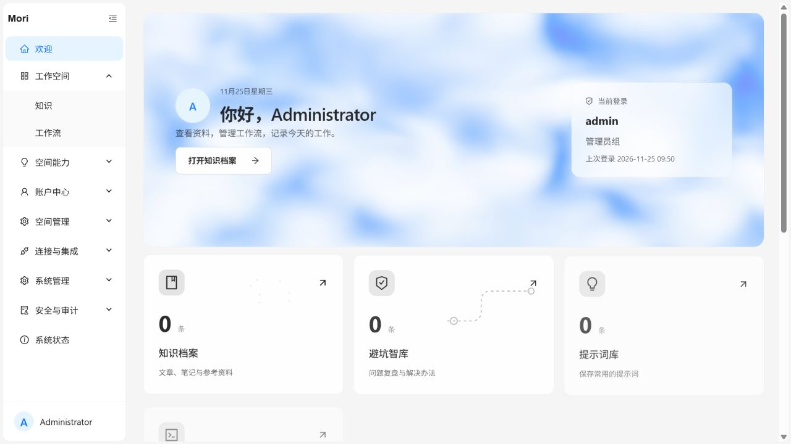

工作记录
你的工作，有一个清晰的入口
能力丰富，工作台依然清晰。

截图来自 Mori 演示工作台，使用空白业务数据。
从今天的进展，到下一次执行能力示意
方法沉淀
把好方法，留下来
提示词
脚本
自动执行
到时间，或收到事件
资产按归属管理 · 脚本隔离执行
空间配置 / MCP 接入
让 Agent 理解你的工作空间。
每个账号都有个人工作空间。
按需授权，清晰掌控。
让工作背景有清晰的归处。
在个人工作空间的 AGENTS.md 中维护目标、背景、偏好、标准和协作边界。
把需要的能力授权给 Agent。
为可信客户端按需授权空间配置、知识、报告、提示词、脚本或工作流等能力。
让工作资料成为可复用的知识。
以 Markdown 维护知识档案，用目录和标签整理；需要时授权 Agent 查询已发布文章。
了解工作空间与 MCP 接入 →沉淀经验，连接 Agent
让专业积累，持续发挥作用。
需要写的，认真写。
值得留下的，反复用。
工作报告
从零散记录，到清晰表达。
编写日报，基于已保存的日报汇总周报。AI 帮你整理和润色，内容由你确认后保存。
日报 / 周报 / AI 整理
提示词库
好用的表达，值得留下。
文本正文搭配变量与默认值，按分类和标签管理。填写、预览、复制，也能优化或关联自动任务。
文本变量 / 私有资产
自动任务
重复的工作，交给计划。
一次、周期、间隔或 Webhook 触发，执行 AI 任务或脚本。查看执行日志与请求记录，通过邮件或 Bark 接收结果。
定时 / Webhook / 执行日志
脚本库
让一段代码，多发挥一次作用。
保存、解释与分析脚本，在隔离环境中测试 Python、JavaScript 和 Shell，并在自动任务中复用已启用的脚本。
在线测试 / 隔离执行
统一标签
不同资产，同一种整理方式。
提示词、脚本、工作流、避坑经验和知识档案共用私有键值标签，多标签同时匹配，让需要的方法更容易找到。
跨资源标签 / 组合筛选
知识档案
让工作资料，成为可查的知识。
用目录和标签整理 Markdown 文章。获授权的 Agent 可以用多个关键词查询已发布知识，并查看命中片段。
Markdown / 关键词检索
个人备份
给自己的工作数据留一份备份。
备份个人报告、知识、资产和自动任务。可下载 ZIP，并在需要时还原到原账号。
ZIP 导出 / 覆盖还原
身份与权限
方便使用，也有明确边界。
支持密码与 Passkey 登录、用户组权限和动态菜单。登录与退出记录、受审计操作分别留痕。
Passkey / 权限 / 审计
看得见界面，找得到方法
从了解功能，到真正用起来。
让方法真正用起来
从一个想法，
到一项自动任务。
先留下有效的方法，再决定何时执行。
选择一个环节，看看 Mori
如何承接。
Mori / 任务配置流程示意
把常用提示词，关联到任务。
任务执行时读取当前启用提示词的最新正文。脚本任务同样读取关联脚本的最新源码。
我的提示词
关联自动任务
执行时读取最新内容
Mori / 任务配置流程示意
选好时间，或等待一个事件。
支持一次、周期和间隔触发。Webhook 任务接收通过签名校验的 JSON，再由独立 Worker 执行。
定时触发 / Webhook
AI 任务 / 脚本任务
邮件或 Bark 通知
Mori / 任务配置流程示意
执行之后，结果有处可查。
执行日志记录结果与状态，Webhook 请求有独立记录。可选关联上游任务，读取其最近完成输出作为参考。
执行结果与状态
Webhook 请求记录
上游输出作为参考
清晰的系统边界
工作由你掌握，能力各司其职。
Mori Vue + FastAPI
业务数据PostgreSQL
任务调度Worker
AI 能力Hermes-Agent
脚本执行script-runner
数据有归属
报告、提示词、脚本、经验和知识归本人私有。Agent 通过 MCP 访问时，需要该账号授权。
AI 与业务分工明确
Mori 管理业务与结果，外部 Hermes-Agent 提供 AI 能力。脚本由独立执行器在内部网络中隔离运行。
开始之前
你可能还想了解
Mori 自带 AI 模型吗？
Mori 通过外部 Hermes-Agent 调用 AI 能力。模型、会话历史、工具与 Agent Loop 由 Hermes-Agent 管理，连接信息在系统配置中维护。
报告和提示词会自动公开吗？
不会。报告、提示词、脚本、经验和知识按账号隔离。发布知识文章后，本账号获授权的 Agent 才能查询。
可以自行部署吗？
项目使用 Docker Compose 组织 Web、API、Worker、PostgreSQL 和脚本执行器。部署前需完成环境变量、数据库挂载、外部网络与 Nginx 证书配置；AI 功能还需连接 Hermes-Agent。